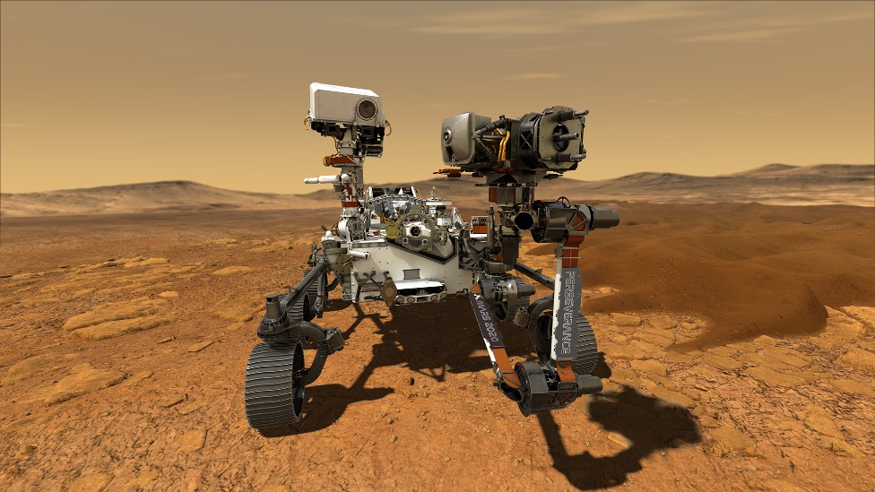
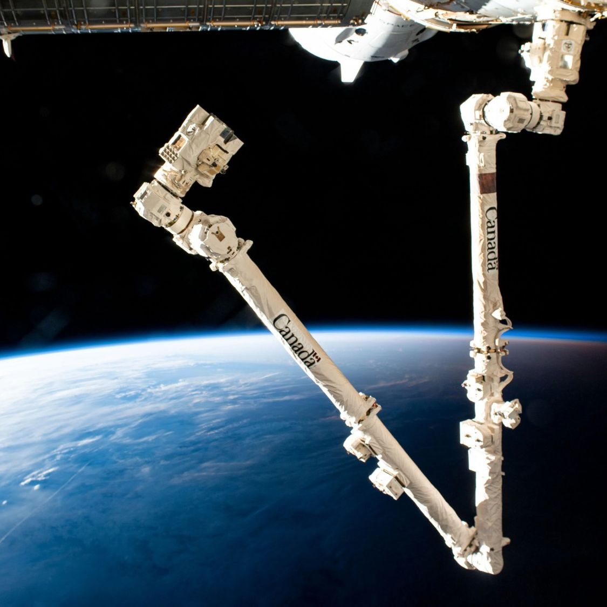
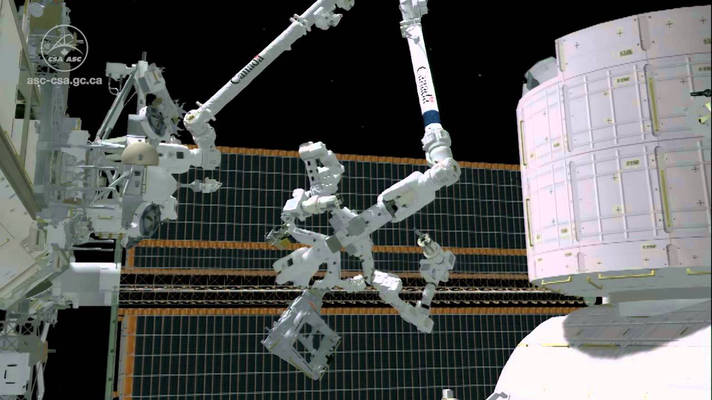
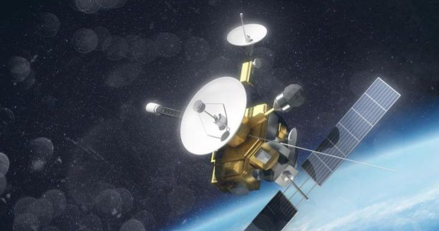

PerseveranceCARD 01
Perseverance: explorando Marte
Perseverance es un rover de la NASA que llegó a Marte en febrero de 2021. Tiene seis ruedas, cámaras, sensores y un brazo robótico de aproximadamente 2,1 metros de largo.
Exploración espacial · Robótica avanzada
Cómo los robots, la inteligencia artificial y los sistemas autónomos nos permiten investigar lugares donde los seres humanos todavía no pueden llegar.
Introducción
Los avances tecnológicos relacionados con la robótica en la exploración espacial fueron fundamentales para conocer mejor el universo y explorar lugares a los que los seres humanos no pueden llegar fácilmente. Gracias al desarrollo de robots, sondas y vehículos autónomos, fue posible investigar planetas, lunas y otros cuerpos del sistema solar sin poner directamente en riesgo la vida de los astronautas. Además, los robots pueden trabajar durante largos períodos en ambientes extremadamente fríos, calientes o con altos niveles de radiación.
Exploración sin riesgo humano directo
Trabajo en ambientes extremos
Operación durante largos períodos
Investigación de lugares inaccesibles
Avances clave

PerseverancePerseverance es un rover de la NASA que llegó a Marte en febrero de 2021. Tiene seis ruedas, cámaras, sensores y un brazo robótico de aproximadamente 2,1 metros de largo.

Canadarm2El brazo robótico Canadarm2 está instalado en la Estación Espacial Internacional y permite mover equipos, ayudar en tareas de mantenimiento y capturar naves de carga.

DextreDextre es un robot diseñado para realizar tareas más precisas en la Estación Espacial Internacional, reduciendo la necesidad de caminatas espaciales.

SondasLas sondas espaciales robóticas permiten estudiar lugares extremadamente alejados de la Tierra y enviar información científica durante años.
Inteligencia artificial
La inteligencia artificial permite que los robots evalúen su entorno, tomen decisiones y respondan ante circunstancias cambiantes sin depender siempre de instrucciones terrestres.
Manipulación
Los sistemas robóticos espaciales se diseñan para soportar condiciones extremas mientras realizan tareas altamente complejas, como mantenimiento, recolección y análisis científico.
Mantenimiento
En la órbita, los robots asumen labores de mantenimiento y reparación que de otra manera requerirían riesgos adicionales para los astronautas. Su diseño incluye brazos articulados, sensores de alta precisión y software para control orientado a tareas.
Reducir riesgos, aumentar la eficiencia y extender la vida útil de la infraestructura espacial.
Comparación
| Sistema | Función | Ambiente | Ventaja |
|---|---|---|---|
| Rover | Exploración | Superficie planetaria | Movilidad y observación |
| Canadarm2 | Manipulación | Orbita | Precisión y alcance |
| Dextre | Mantenimiento | Exterior de estación | Reparaciones complejas |
| Sonda | Investigación remota | Espacio profundo | Colecta datos a gran distancia |
Conclusión
La robótica en la exploración espacial nos permite ir mucho más lejos de lo que la humanidad podría lograr sola. Cada misión aporta datos, experiencia y tecnología que impulsan nuevas investigaciones, mejoras en ingeniería y un mayor entendimiento del cosmos.
“La ciencia avanza cuando la tecnología nos permite llegar allí donde antes no podíamos ir.”